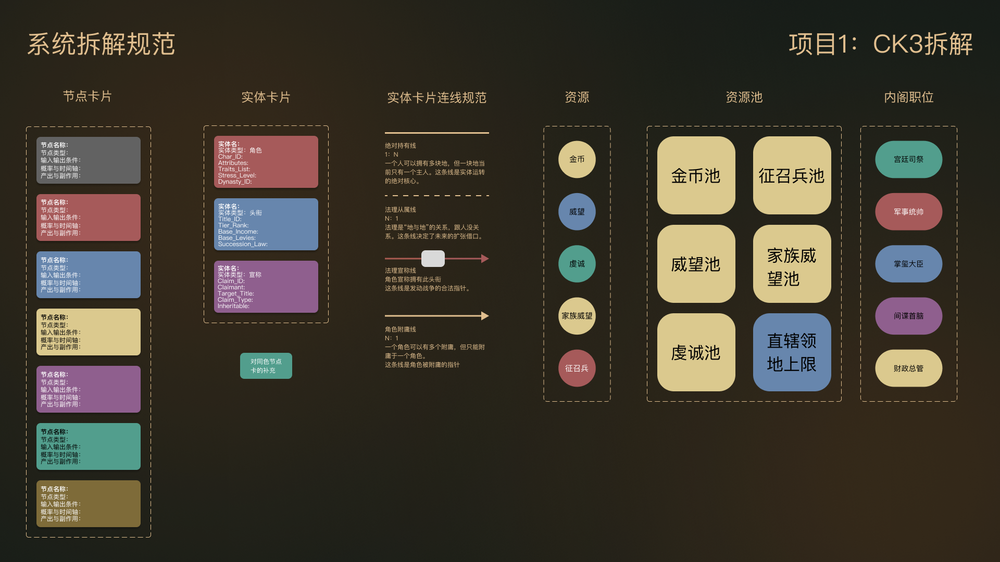
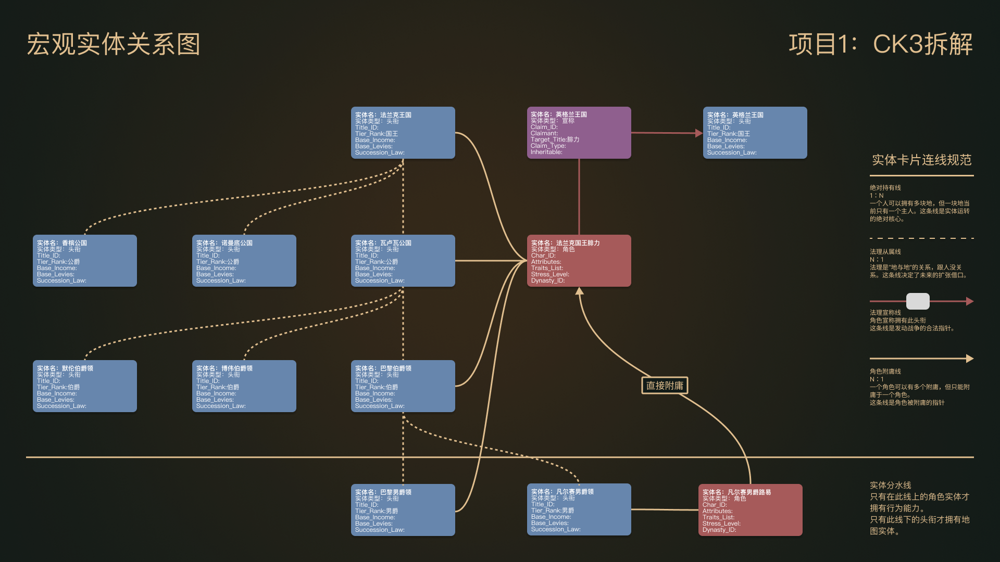
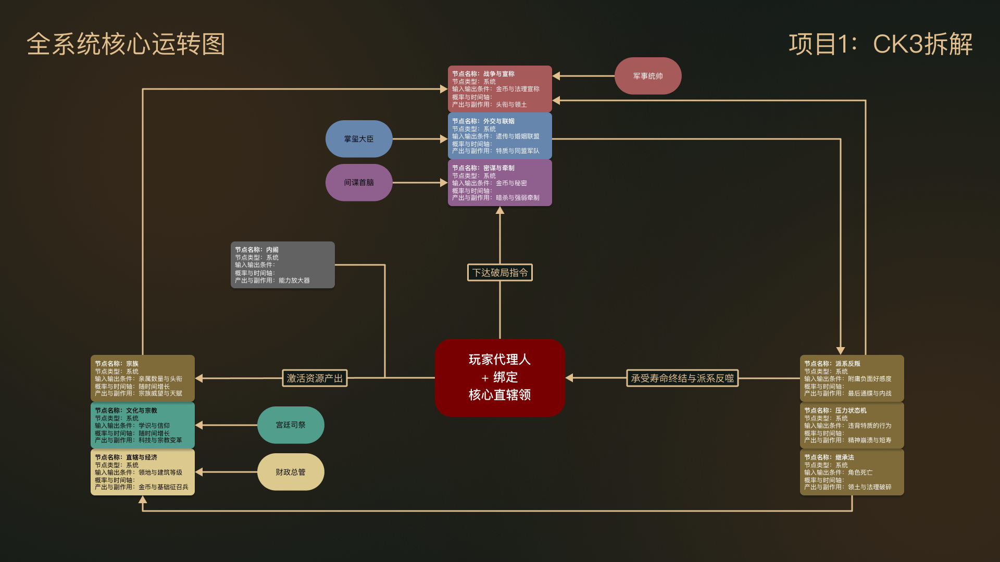
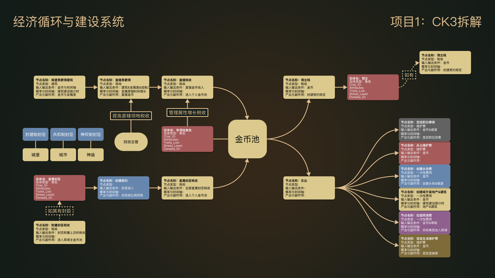
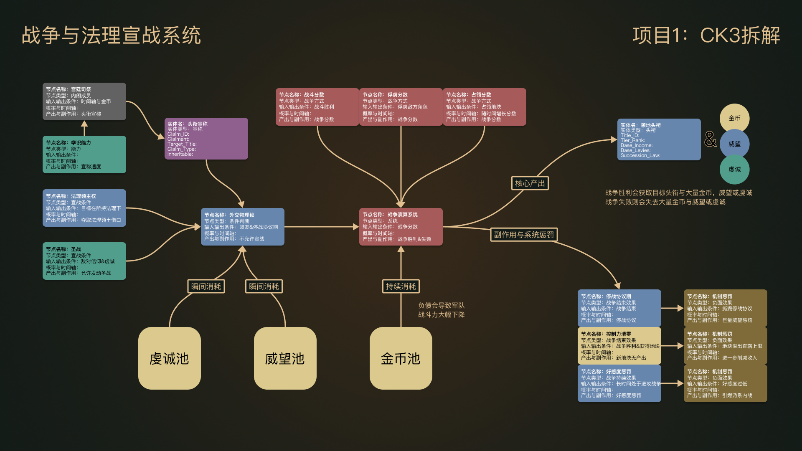
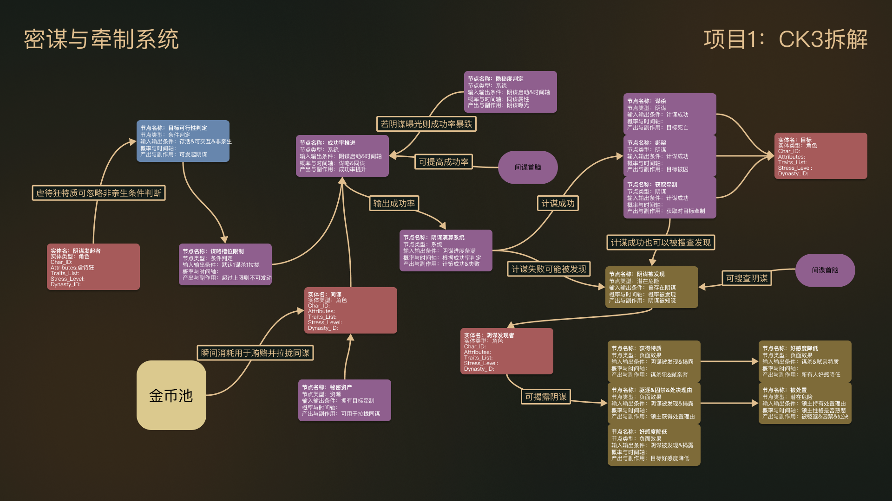
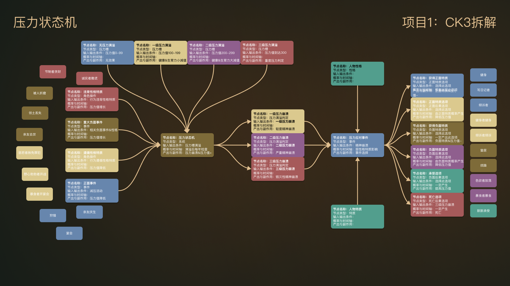
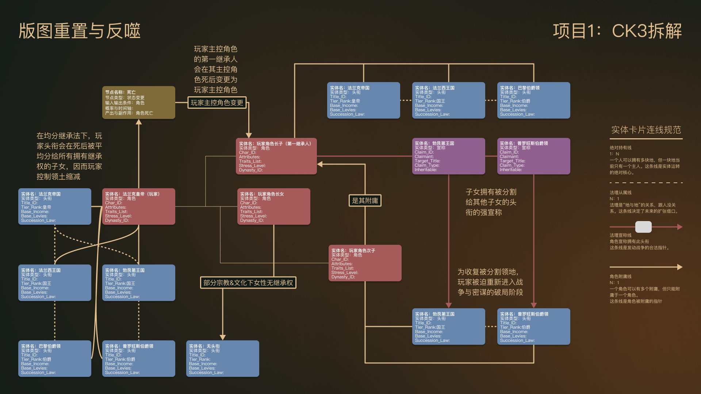

《十字军之王3》(CK3) 是一款包含复杂动态系统的沙盒战略游戏。本项目的目标是对其底层架构进行逆向工程分析，梳理法理、经济、军事、密谋与压力等多维系统是如何协同运转的。
本拆解案的核心观点在于：CK3 维持游戏寿命的关键在于其“动态平衡系统”。玩家的扩张与发展，最终都需要在寿命倒计时中，用来维持权力结构与宗族的存续。
《十字军之王3》(CK3) 是一款包含复杂动态系统的沙盒战略游戏。本项目的目标是对其底层架构进行逆向工程分析，梳理法理、经济、军事、密谋与压力等多维系统是如何协同运转的。
本拆解案的核心观点在于：CK3 维持游戏寿命的关键在于其“动态平衡系统”。玩家的扩张与发展，最终都需要在寿命倒计时中，用来维持权力结构与宗族的存续。
为了清晰地呈现庞大的系统，拆解工作分为四个执行阶段：宏观实体关系解耦、核心循环架构确立、各个子系统深拆、以及继承与版图重置分析。
同时，我制定了统一的图例规范。通过区分“资源池”、“内阁职位”、“实体卡片”以及明确的连线逻辑（如绝对持有线、法理从属线），确保整个系统图谱在逻辑上严密且可读。

在宏观层面，游戏的主要实体被解耦为：角色、头衔与宣称。它们之间的持有与附庸关系构成了游戏权力的基础网络。
在核心循环上，游戏依赖于内阁、密谋、战争等模块产出资源与头衔，而玩家代理人则需要不断处理这些系统带来的副作用（如派系反叛与压力积累）。


这一部分对支撑游戏运转的四个主要子系统进行了独立的状态机与逻辑流拆解：




角色死亡是 CK3 中最重要的系统重置节点。在均分继承法下，主控角色死亡会导致领土被强制分割给所有继承人，玩家的实际控制力断崖式下降。这迫使玩家在进入下一个世代后，重新通过战争与密谋来收复失地，完成了整个游戏生命周期的闭环。
